Dans le cadre d’un workshop en groupe dont l’objectif était de créer un fanzine sur un club, notre choix s’est porté sur les Lego.
Le choix de traitement graphique était de créer tout un univers visuel qui évoque celui du Lego : tant par ce qu’il symbolise dans la nostalgie intergénérationnelle que dans son aspect visuel. Cette représentation de l’objet est suggérée par l’homothétie du format par rapport à celui d’une brique conventionnelle, par la typographie singulière crée à partir de Dots ou encore l’évocation des notices sur la première page de couverture.
Également, des empreintes ou des formes de Lego sont utilisées pour la pagination, les noms des membres du club ou des pages purement visuelles. La symbolique du Lego, amusant et didactique, est évoquée au travers des jeux de mots, des compositions et des contenus des textes.
 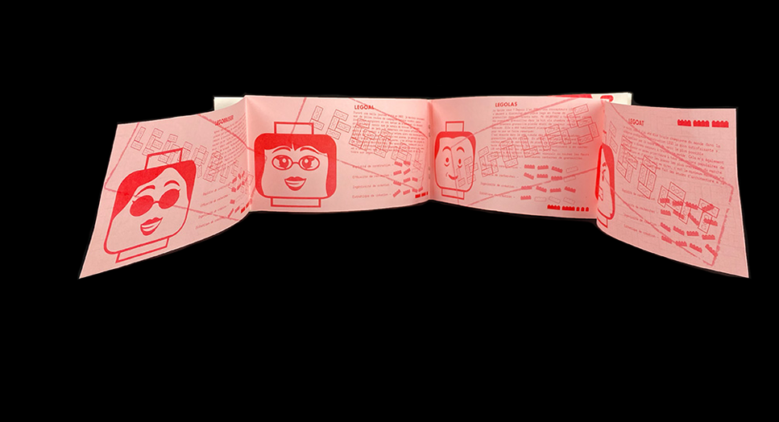
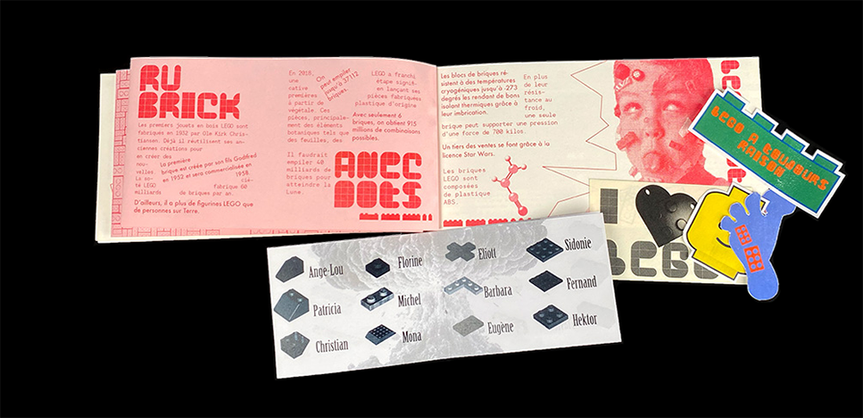
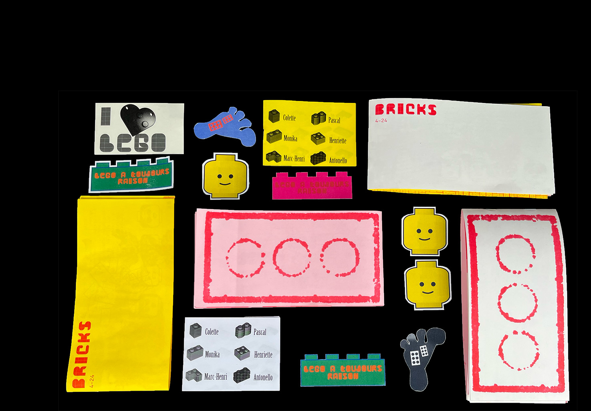
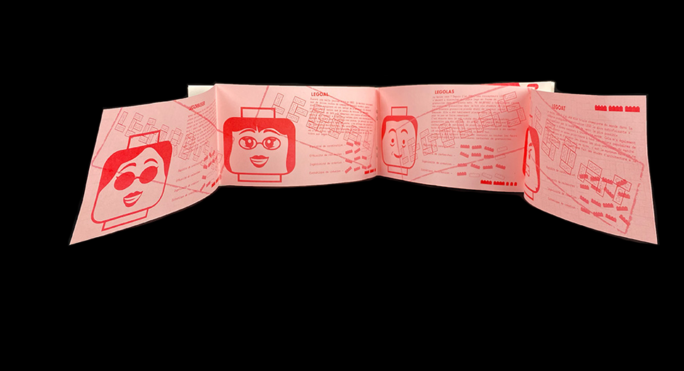
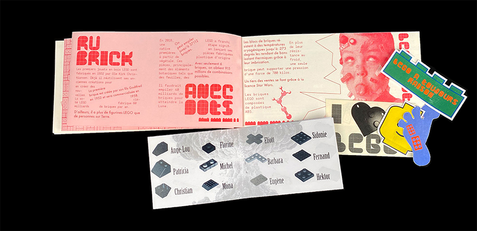
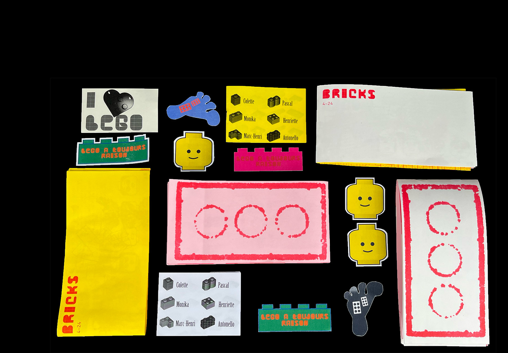
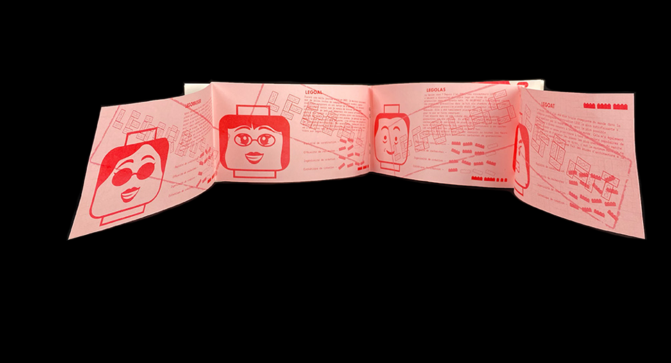
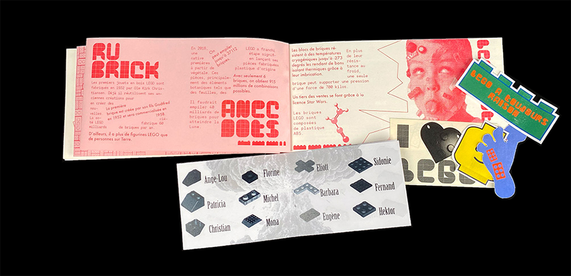
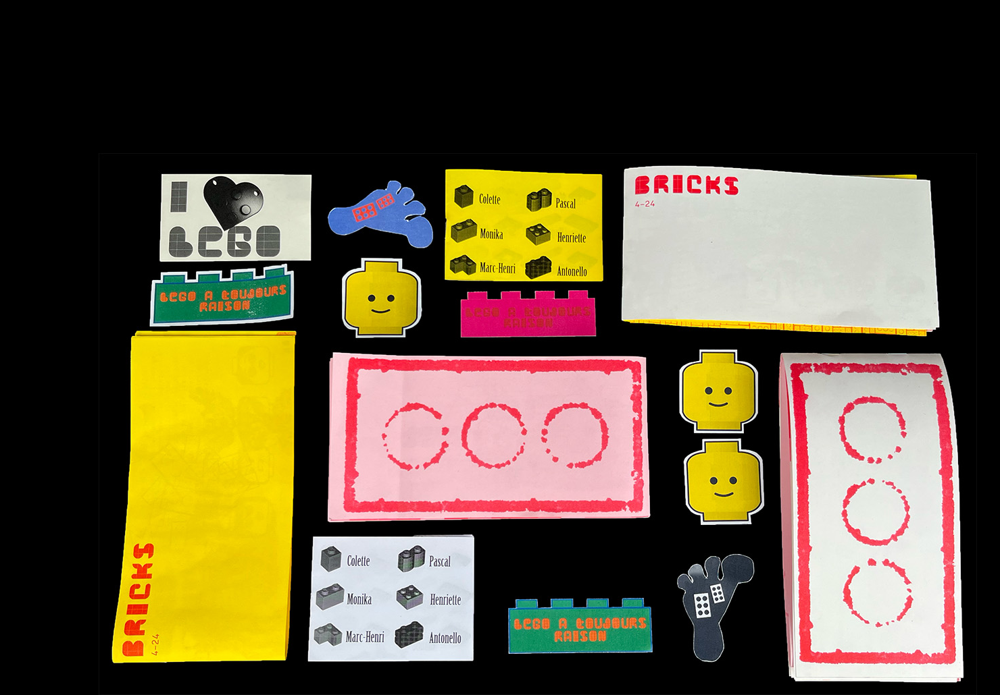
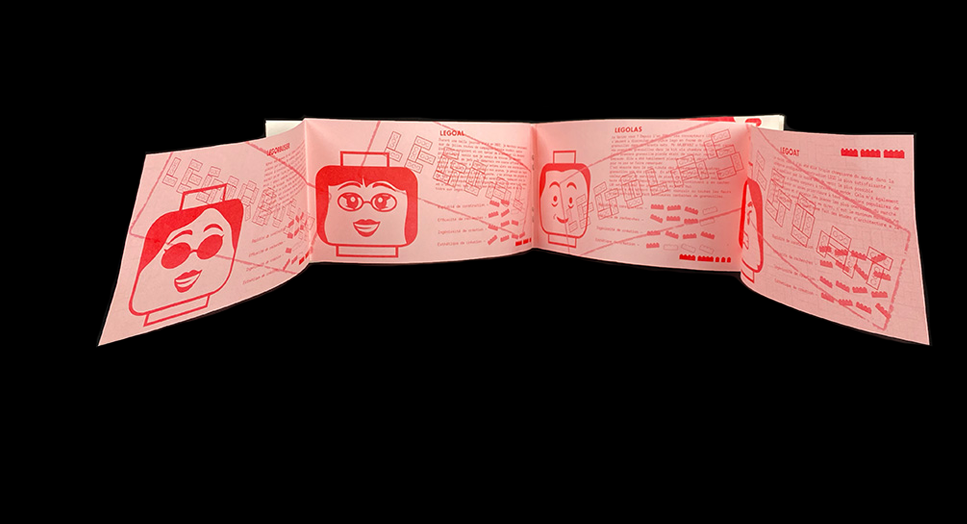
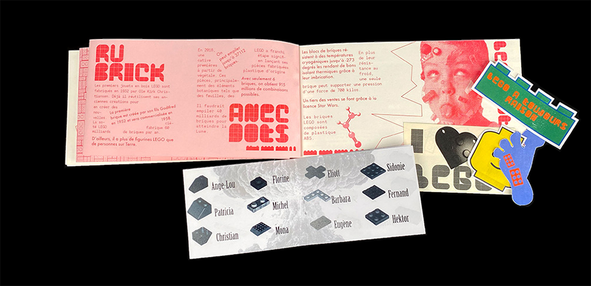
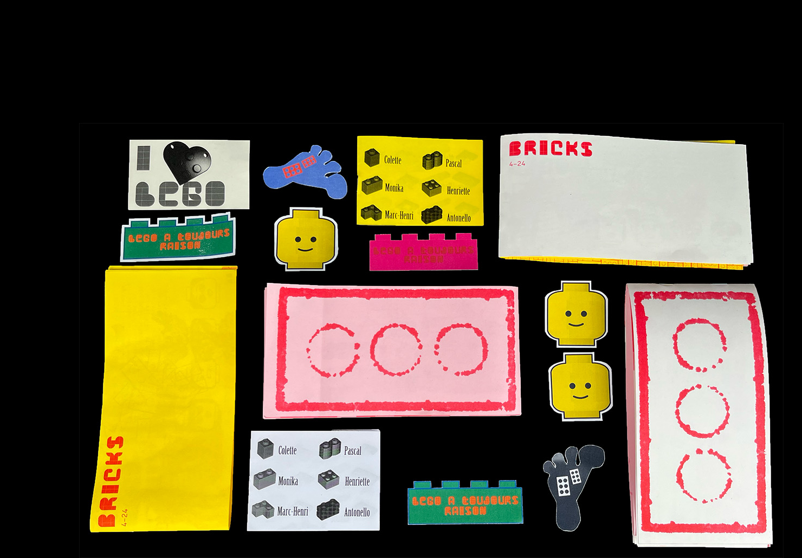